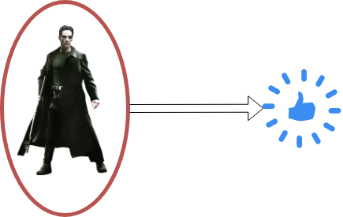

Introduction to Instrumental Variables
Data-Based Economics
What is causality?

Clear? Huh! Why a four-year-old child could understand this report! Run out and find me a four-year-old child, I can’t make head or tail of it.
Spurious correlation

Spurious Correlation
- We have seen spurious correlation before
- it happens when two series comove without being actually correlated
- Also, two series might be correlated without one causing the other
- ex: countries eating more chocolate have more nobel prices…
Factual and counterfactual


- Suppose we observe an event A
- A: a patient is administered a drug, government closes all schools during Covid
- We observe a another event B
- B: the patient recovers, virus circulation decreases
- To interpret B as a consequence of A, we would like to consider the counter-factual:
- a patient is not administered a drug, government doesn’t close schools
- patient does not recover, virus circulation is stable
An important task in econometrics is to construct a counter-factual
- as the name suggests is it sometimes never observed!
Measuring effect of treatment



- Assume we have discovered two medications: R and B
- Give one of them (R) to a patient and observe the outcome
- Would would have been the effect of (B) on the same patient?
- ????
- What if we had many patients and let them choose the medication?
Maybe the effect would be the consequence of the choice of patients rather than of the medication?
An exmple from behavioural economics
- Example: cognitive dissonance
- Experiment in GATE Lab
- Volunteers play an investment game.
- They are asked beforehand whether they support OM, PSG, or none.
- Experiment 1:
- Before the experiment, randomly selected volunteers are given a football shirt of their preferred team (treatment 1)
- Other volunteers receive nothing (treatment 0)
- Result:
- having a football shirt seems to boost investment performance…
Experiment 2: subjects are given randomly a shirt of either Olympique de Marseille or PSG.
Result:
- Having the good shirt improves performance.
- Having the wrong one deteriorates it badly.
- How would you code up this experiment?
- Can we conclude on some form of causality?


Randomized Control Trial
Randomized Control Trial (RCT)
The best way to ensure that treatment is independent from other factors is to randomize it.
- In medecine
- some patients receive the treatment (red pill)
- some other receive the control treatment (blue pill / placebo)
- In economics:
- randomized field experiments
- randomized phase-ins for new policies
- very useful for policy evaluation


Choosing a good instrument

Choosing an instrumental variable
A good instrument when trying to explain y by x, is a variable that is correlated to the treatment (x) but does not have any effect on the outcome of interest (y), appart from its effect through x.